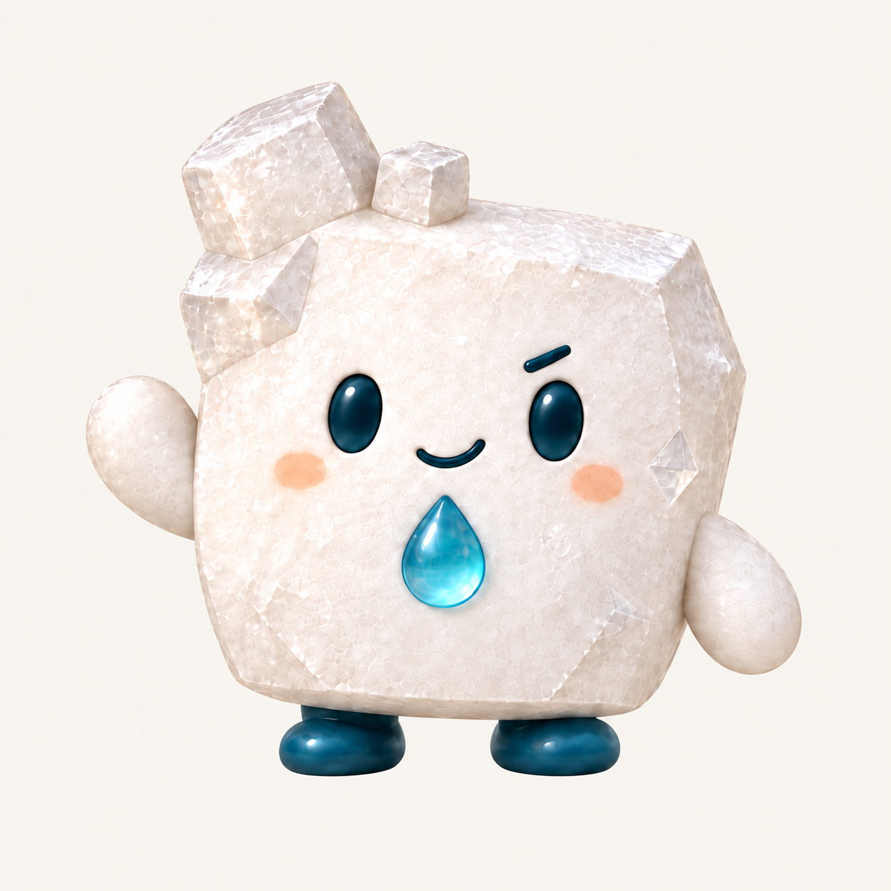
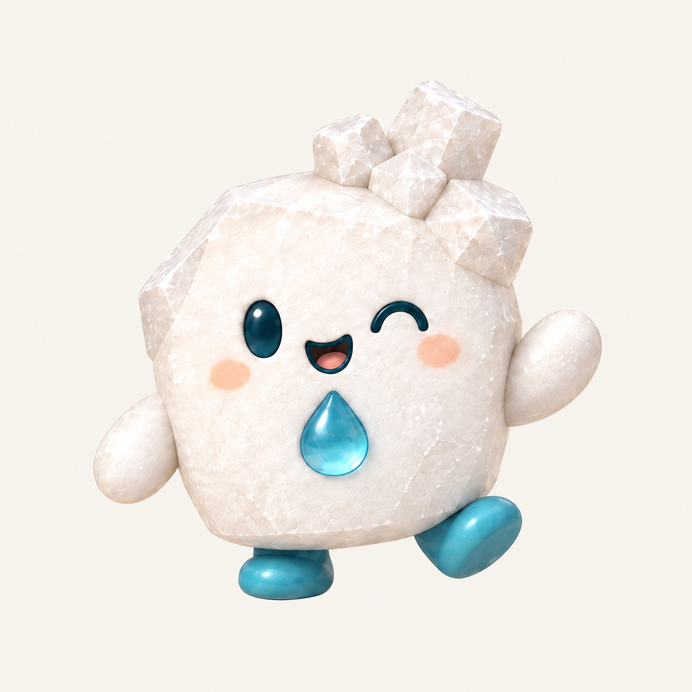

재활용 기술
개발 참여
절임염수를 다시 쓰는 기술의 개발에 참여합니다.
WATER + TECHNOLOGY
와텍은 절임염수 재활용 기술 개발 참여와 설비 공급, 절임염수 케어, 민원 케어를 함께하는 전문 회사입니다.
절임염수 재활용 기술 개발에 참여하고 설비를 공급하며, 현장에서 필요한 염수 관리와 공정·운영 검토를 돕습니다.
민원이 발생하면 서류 작성부터 현장의 기술적 처리까지, 필요한 실무·기술 지원을 현장의 조건에 맞춰 함께합니다.
와텍 소개서 읽기OUR ROLE
절임염수를 다시 쓰는 기술의 개발에 참여합니다.
염수 상태와 공정, 운영 조건을 살펴 필요한 관리 방향을 정리합니다.
상황 정리와 서류 작성, 기술적 처리와 사후 점검을 지원합니다.
소금이와 소그미

“아껴 쓰려면, 먼저 잘 살펴야 해.”
듬직하고 꼼꼼한 친구. 서두르지 않고 차근차근 확인하며, 다시 쓰기에 알맞은지 살피는 일을 중요하게 생각합니다.

“여기에도 다음 쓰임이 있을까?”
작은 낭비도 놓치지 않는 호기심 많은 친구. 발견한 것을 소금이와 나누고, 함께 다음 방법을 찾습니다.
절임이 끝난 어느 날, 소그미가 남은 소금물을 들여다봤습니다. “소금아, 다 어디 갔어?” 소금이가 답했습니다. “여기 있어. 물에 녹아서 잘 안 보이는 거야.”
두 친구는 소금물의 상태를 살피고, 다시 쓰기에 알맞은지 확인했습니다. 다시 쓰기 어려운 물은 알맞게 처리하도록 보내고, 확인을 마친 소금물은 다음 쓰임을 준비했습니다.
소금이는 꼼꼼히 확인하고, 소그미는 작은 낭비도 그냥 지나치지 않습니다. 한 알도 소중하게, 다음 쓰임까지 함께.
와텍의 자원 순환 가치를 담은 창작 이야기입니다.현장의 상황부터 함께 정리합니다.
상담할 내용 정리하기